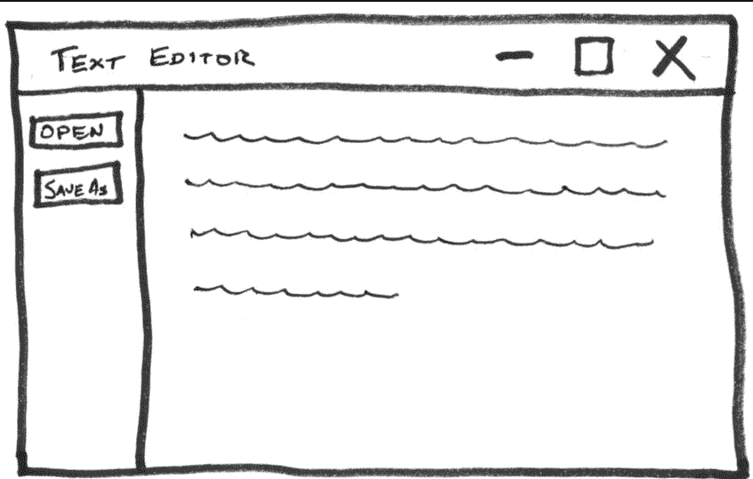
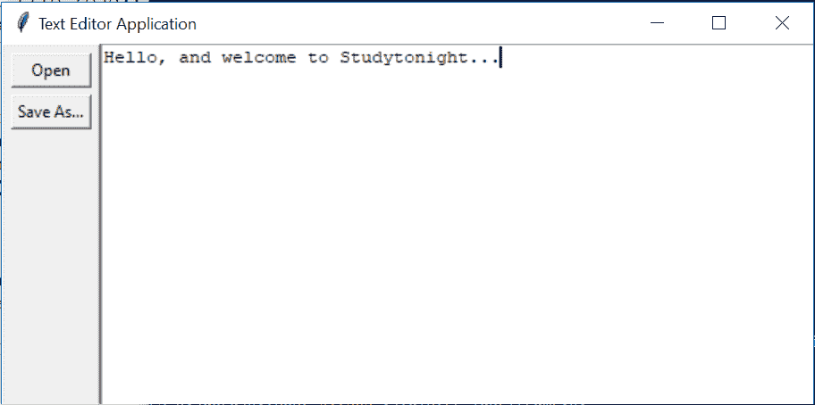

Tkinter 文本编辑器应用（Python 项目）
原文：https://www.studytonight.com/tkinter/text-editor-application-using-tkinter
在本教程中，我们将帮助您使用 Tkinter 构建一个简单的文本编辑器应用，这对于 Tkinter 来说是一个非常好的初学者项目。
文本编辑器应用是一个应用，你可以写你的文本，打开任何文本文件，你可以编辑任何文本文件，你也可以保存一个文件，如果你想。在本教程中，我们将从头开始构建一个文本编辑器应用。
文本编辑器应用的基本元素如下:
有一个名为
btn_open的按钮小部件 ，用于打开文件进行编辑第二个是一个名为
btn_save的按钮小部件，用于保存文件第三，有一个名为
txt_edit的文本小部件 ，用于创建和编辑任何文本文件。
三个小部件的排列方式是，两个按钮在窗口的左侧，文本框在右侧。整个窗口的最小高度应为 900 像素，txt_edit的最小宽度应为 900 像素。如果调整窗口大小，整个布局应该是响应的，然后txt_edit也调整大小。握住按钮的Frame的宽度不应改变。
让我们向您展示一下这个文本编辑器的大致轮廓:

文本编辑器应用的所需布局可以使用.grid()几何管理器来实现。这个布局包含一行和两列:
左侧有一个窄栏用于按钮
在右侧，文本框有一个更宽的栏
为了设置窗口和txt_edit的最小尺寸，您只需要将窗口方法.rowconfigure()和.columnconfigure()的minsize参数设置为 900 即可。为了处理尺寸调整，这些方法的weight参数将被设置为 1。
如果你希望两个按钮都在同一个列中，那么你需要创建一个名为fr_buttons的Frame部件。根据上面显示的草图，两个按钮应垂直堆叠在此框架内，顶部有btn_open。这可以由.grid()或.pack()几何经理完成。现在，您只需要坚持使用.grid()，因为使用它更容易。
让我们从构建应用的代码开始:
1.创建所有需要的小部件
使用的代码片段如下:
import tkinter as tk
window = tk.Tk()
window.title("Text Editor Application")
window.rowconfigure(0, minsize=900, weight=1)
window.columnconfigure(1, minsize=900, weight=1)
txt_edit = tk.Text(window)
fr_buttons = tk.Frame(window)
btn_open = tk.Button(fr_buttons, text="Open")
btn_save = tk.Button(fr_buttons, text="Save As...")
上述代码的解释:
第一个命令用于导入
tkinter。然后接下来的两行用来创建一个标题为
"Text Editor Application"的新窗口。接下来的两行代码用于设置行和列配置。
然后从 9 到 12 的行将为文本框、框架以及打开和保存按钮创建您需要的四个小部件。
window.rowconfigure(0, minsize=900, weight=1)
代码中的上一行表示.rowconfigure()的minsize参数设置为900、weight设置为1.第一个参数为0，用于将第一行的高度设置为900像素，并确保该行的高度与窗口的高度成比例增长。应用布局中只有一行，因此这些设置应用于整个窗口。
然后看看代码中的这一行:
window.columnconfigure(1, minsize=900, weight=1)
在上面的代码中.columnconfigure()将索引为1的列的width和weight属性分别设置为900和1。请记住，行和列索引是从零开始的，因此这些设置仅适用于第二列。通过配置第二列，当调整窗口大小时，文本框将自然展开和收缩，而包含按钮的列将始终保持固定宽度。
2.创建应用布局
btn_open.grid(row=0, column=0, sticky="ew", padx=5, pady=5)
btn_save.grid(row=1, column=0, sticky="ew", padx=5)
以上两行代码将创建一个网格，在fr_buttons框架中有两行一列，因为btn_open和btn_save都将其master属性设置为fr_buttons。btn_open放在第一排，btn_save放在第二排，这样布局中btn_open出现在btn_save上方，如上图所示。
btn_open和btn_save都将其sticky属性设置为"ew"，这将强制按钮在两个方向上水平扩展，以便填充整个框架。它确保两个按钮大小相同。只需将
padx和pady参数设置为 5，即可在每个按钮周围放置 5 像素的填充。btn_open有垂直衬垫。因为它在顶部，垂直填充使按钮从窗口顶部向下偏移一点，并确保这和btn_save之间有一个小间隙。
现在fr_buttons已经布局好了，可以开始了，现在可以为窗口的其余部分设置网格布局了:
fr_buttons.grid(row=0, column=0, sticky="ns")
txt_edit.grid(row=0, column=1, sticky="nsew")
以上两行代码用于为window创建一行两列的网格。您可以将fr_buttons放在第一列，将txt_edit放在第二列，这样fr_buttons就会出现在窗口布局中txt_edit的左侧。
fr_buttons的sticky参数将被设置为"ns"，这将迫使整个框架垂直扩展，并填充其柱的整个高度。txt_edit用于填充整个网格单元，因为您将其sticky参数设置为"nsew"，这将迫使其向各个方向扩展。
**现在我们刚刚创建了按钮，但是这些按钮在我们添加功能之前不会工作，所以让我们开始添加按钮的功能:
1.打开文件的功能
open_file 的代码片段如下:
def open_file():
"""Open a file for editing."""
filepath = askopenfilename(
filetypes=[("Text Files", "*.txt"), ("All Files", "*.*")]
)
if not filepath:
return
txt_edit.delete(1.0, tk.END)
with open(filepath, "r") as input_file:
text = input_file.read()
txt_edit.insert(tk.END, text)
window.title(f"Text Editor Application - {filepath}")
解释:
第 3 行至第 5 行使用
tkinter.filedialog模块的askopenfilename对话框显示文件打开对话框，并将选择的文件路径存储至filepath。第 6 行和第 7 行检查用户是否关闭对话框或点击取消按钮。如果是，那么
filepath将是None，函数将是return，不执行任何代码来读取文件和设置txt_edit的文本。第 8 行使用
.delete()清除txt_edit当前内容。第 9 行和第 10 行用于在将
text存储为字符串之前打开所选文件及其内容。第 11 行使用
.insert()将字符串text分配给txt_edit。第 12 行设置窗口标题，使其包含打开文件的路径。
2.保存文件的功能
save_file 的代码片段如下:
def save_file():
"""Save the current file as a new file."""
filepath = asksaveasfilename(
defaultextension="txt",
filetypes=[("Text Files", "*.txt"), ("All Files", "*.*")],
)
if not filepath:
return
with open(filepath, "w") as output_file:
text = txt_edit.get(1.0, tk.END)
output_file.write(text)
window.title(f"Text Editor Application - {filepath}")
解释:
第 3 行至第 6 行使用
asksaveasfilename对话框从用户处获取所需的保存位置。选择的文件路径存储在filepath变量中。第 7 行和第 8 行检查用户是否关闭对话框或点击取消按钮。如果是，那么
filepath将是None，该函数将返回，而不执行任何将文本保存到文件中的代码。第 9 行在选定的文件路径创建一个新文件。
第 10 行使用
.get()方法从txt_edit中提取文本，并将其分配给变量text。第 11 行将
text写入输出文件。第 12 行更新窗口标题，使新文件路径显示在窗口标题中。
完整源代码为:
import tkinter as tk
from tkinter.filedialog import askopenfilename, asksaveasfilename
def open_file():
"""Open a file for editing."""
filepath = askopenfilename(
filetypes=[("Text Files", "*.txt"), ("All Files", "*.*")]
)
if not filepath:
return
txt_edit.delete(1.0, tk.END)
with open(filepath, "r") as input_file:
text = input_file.read()
txt_edit.insert(tk.END, text)
window.title(f"Text Editor Application - {filepath}")
def save_file():
"""Save the current file as a new file."""
filepath = asksaveasfilename(
defaultextension="txt",
filetypes=[("Text Files", "*.txt"), ("All Files", "*.*")],
)
if not filepath:
return
with open(filepath, "w") as output_file:
text = txt_edit.get(1.0, tk.END)
output_file.write(text)
window.title(f"Text Editor Application - {filepath}")
window = tk.Tk()
window.title("Text Editor Application")
window.rowconfigure(0, minsize=800, weight=1)
window.columnconfigure(1, minsize=800, weight=1)
txt_edit = tk.Text(window)
fr_buttons = tk.Frame(window, relief=tk.RAISED, bd=2)
btn_open = tk.Button(fr_buttons, text="Open", command=open_file)
btn_save = tk.Button(fr_buttons, text="Save As...", command=save_file)
btn_open.grid(row=0, column=0, sticky="ew", padx=5, pady=5)
btn_save.grid(row=1, column=0, sticky="ew", padx=5)
fr_buttons.grid(row=0, column=0, sticky="ns")
txt_edit.grid(row=0, column=1, sticky="nsew")
window.mainloop()

正如你在输出中看到的，我们有一个基本的文本编辑器应用，在其中我们可以写一些东西，然后将文本保存在一个新的文件中，或者使用打开按钮在编辑器中打开一个文件然后编辑它。